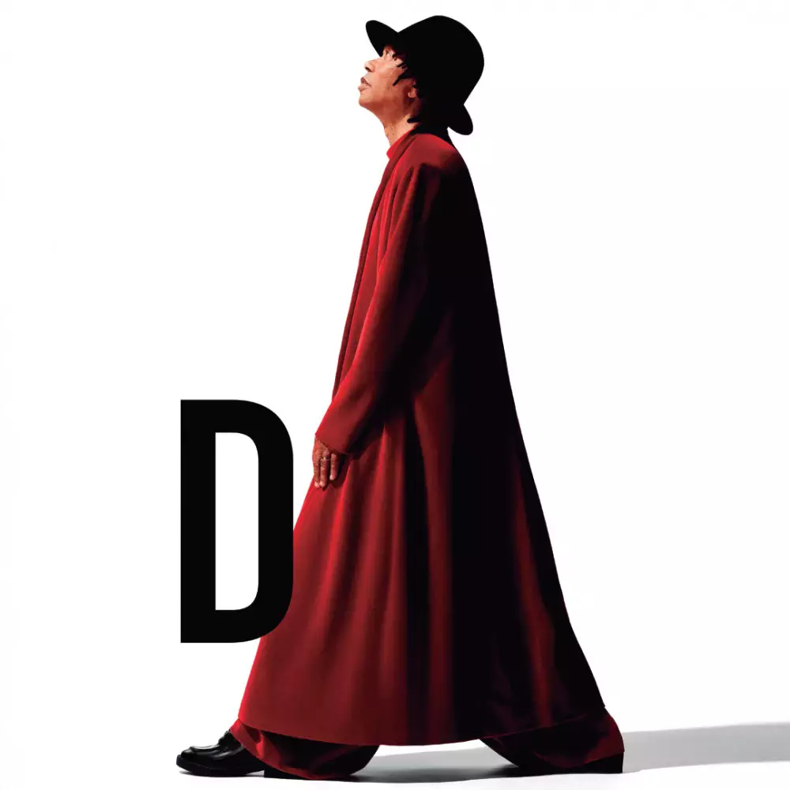

|  | OS ANOS 80 E O SUCESSO MUNDIAL |
O sucesso de sua carreira começou por meiados da década de 80 com a sua primeira música "FLOR DE LIS". |
"Flor de Lis" não apenas consolidou Djavan no cenário musical brasileiro, |
Mesmo sozinho e sendo considerado o faz tudo,Djavan seguiu com uma firmeza admirável,
uma luz no olhar e um peito cheio de esperança por dias melhores.
No entanto, o fruto da construção de sua carreira lhe trouxe a |
ACESSO AO SITE OFICIAL,LOCAIS PARA ESCUTAR E ASSISTIR |